Marcus Anderson
Research notes, papers, software, and archived music work.
New
invite code
j7Uh4vGg4UrF
Try my probabilistic music-generation studio at
thesoundinator.com
Research
-
Experience-Dependent Differences in the Neural Representation of Food: An EEG Study of Long-Term Dietary Habits
Master's thesis (MPhil). An EEG and multivariate-pattern study finding that long-term vegetarians and vegans show enhanced neural discrimination of meat under deliberate viewing — a broad expansion of the food representational space that runs counter to exposure-based models of perceptual learning. -
Empathy as a Signal of Type: A Verification-Horizon Model of Trust and Strategic Mimicry
Develops a signalling-game model of trust under limited verification, showing when costly prosocial action can distinguish integrated from strategic types and how that evidence weakens as the verification gap grows. -
Musical Repetition as Vocal Self-Simulation
A mechanistic theory arguing that precise repetition of affective vocalisation is the core process that turns sound into musical experience. -
Inverse-Square Distance Pruning: A Spatial Initialisation Method for Clustered Small-World Graphs
Defines the foundational random-spatial graph construction behind the notebook series and later pruning studies, with density-matched evidence for its clustering, small-world, and visible hierarchical properties. -
Inverse-Square Distance Priors Improve Network Pruning at Extreme Sparsity
Tests a biologically inspired 1/d^2 wiring prior for sparse neural networks, showing improved ResNet-18 performance at 98-99% sparsity. -
Bandwidth and Capacity Systematically Shape the Topology of Inverse-Square Distance Pruning
Characterizes how inverse-square pruning changes network topology across input resolution and model size, highlighting bandwidth-dependent clustering and stronger 2D embeddings.
Software
Soundinator — a probabilistic, physically-modelled music studio and research instrument
A full browser-based music studio, designed and built end-to-end. It generates music from weighted probability distributions across several musical timescales, renders it through a physical-modelling synthesis engine, and arranges it on a multitrack producer timeline — while doubling as a reproducible instrument for researching why music sounds good.
Soundinator is now live at
thesoundinator.com —
in early testing, so access is invite-only. The first 30 people can
create an account with the invite code
j7Uh4vGg4UrF.
Found a problem? There's a “Report a problem” button in the
account menu — every report helps.
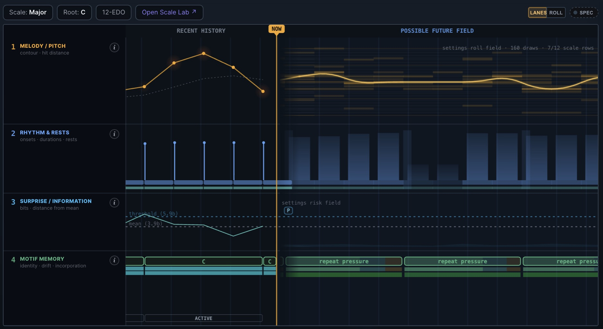
- Generative core — melody, rhythm, register, articulation and surprise are all driven by editable probability distributions, with motif memory that repeats, drifts and mutates into a growing repertoire.
- Physical-modelling synthesis — every note is built from an excitor → resonator → body → effects → space chain: additive and formant voices, inharmonicity, material damping, vibrato and per-note envelopes rather than samples.
- Per-layer effects rack — eleven skeuomorphic, plugin-style effects across EQ, drive, modulation, delay and character, each with its own DSP, presets and expand-to-overlay face.
- Binaural spatialisation — position each source around the listener with a head / room / air model fitted from measured KEMAR HRTFs, with per-track motion through time.
- Microtonal Scale Lab — N-EDO systems, world tunings, per-degree cents, sub-scales and roots, with Scala import / export.
- Producer / DAW — arrange instruments on a multitrack timeline with seed-reproducible takes, a bake-to-piano-roll note editor, a channel-strip mixer, and offline WAV mixdown.
- Community library — invite-gated sharing of instruments, sequences and behaviours with ratings and profiles, plus an auditioner that layers shared patches into a live jam.
- Research-ready — every play, rating and edit is reproducible from a seed and can be logged (opt-in only) with expectation / surprise metrics, so appeal can be modelled directly against the mechanisms that generated the music.
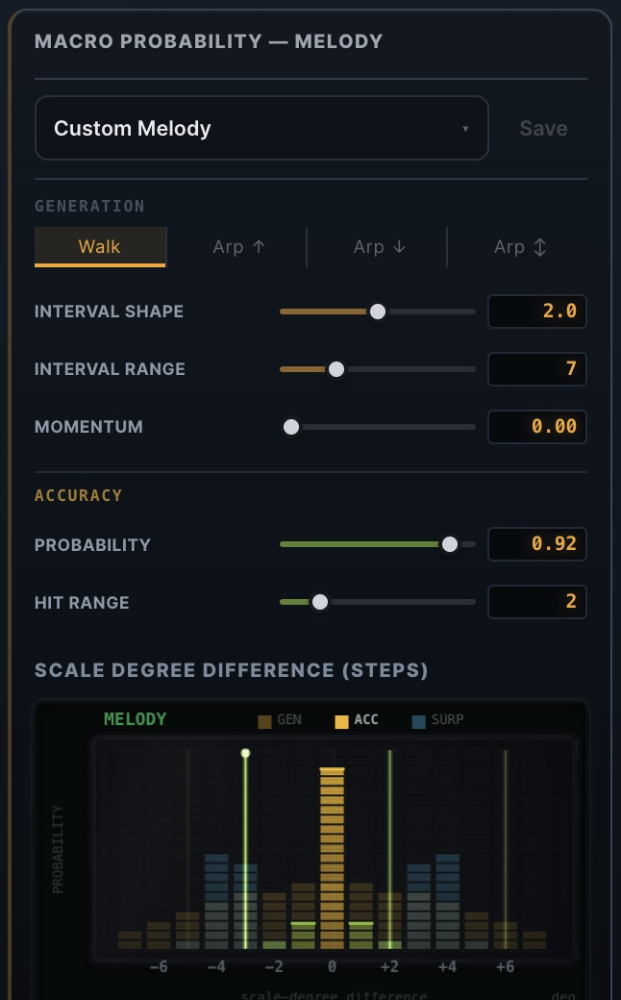
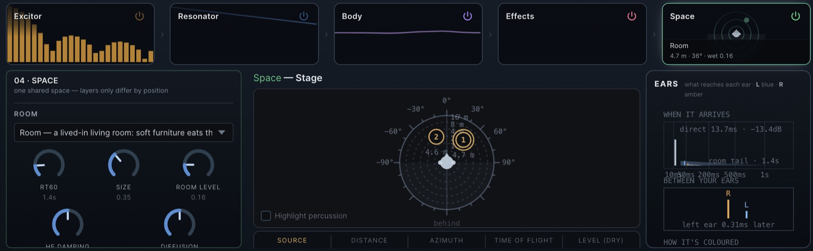
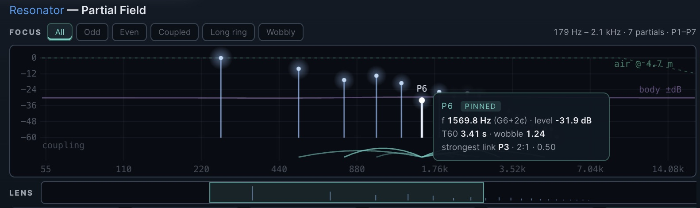
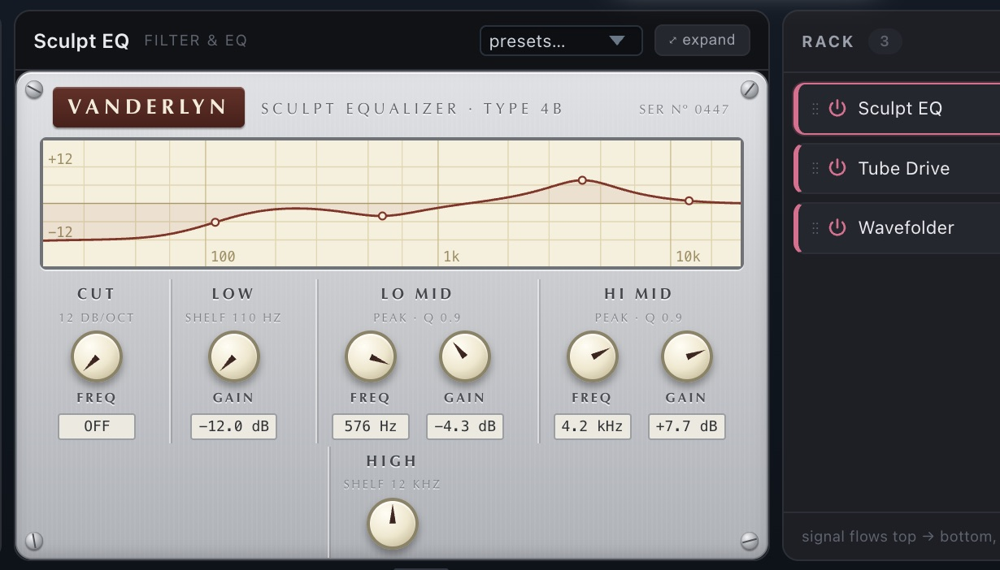
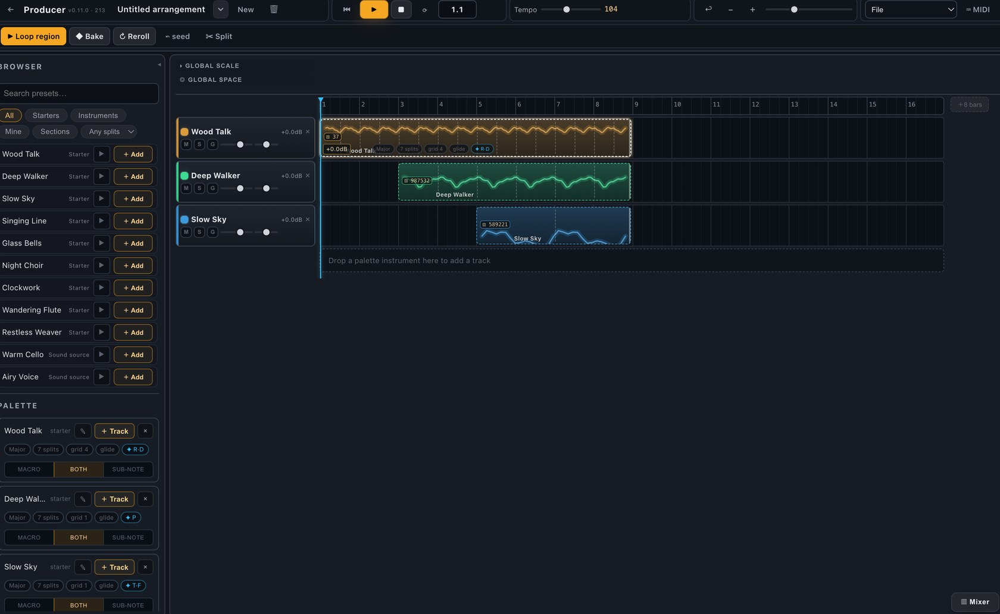
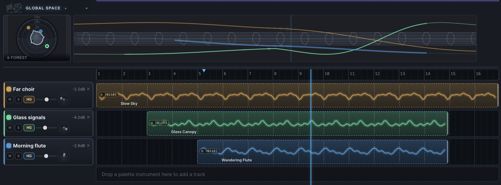
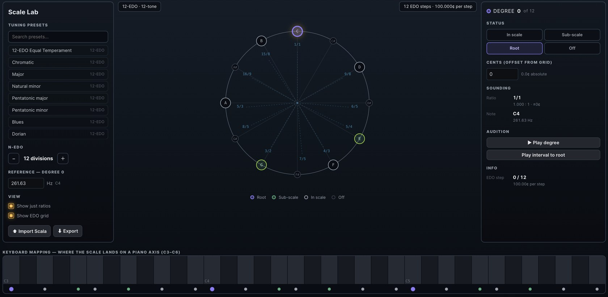
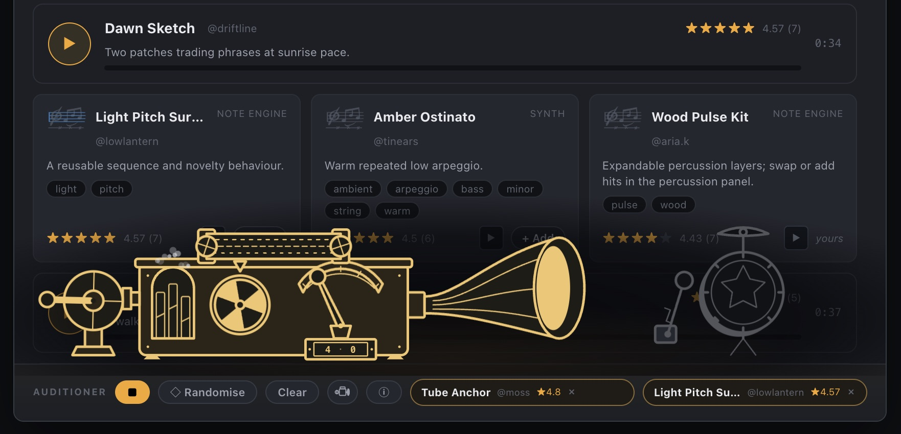
Biologically Inspired Graph Networks — a self-teaching notebook course on network topology, from graph theory to developmental pruning
A seven-notebook course that starts from graph-theory basics and builds towards the pruning-based network construction behind my sparse-network papers. It's written as a way into thinking about neural networks the way biology does: not wired from scratch, but grown dense and then pruned back. Every notebook motivates its maths with the brain — neurons as nodes, synapses as weighted edges — and ends in runnable code you can re-generate, change, and measure.
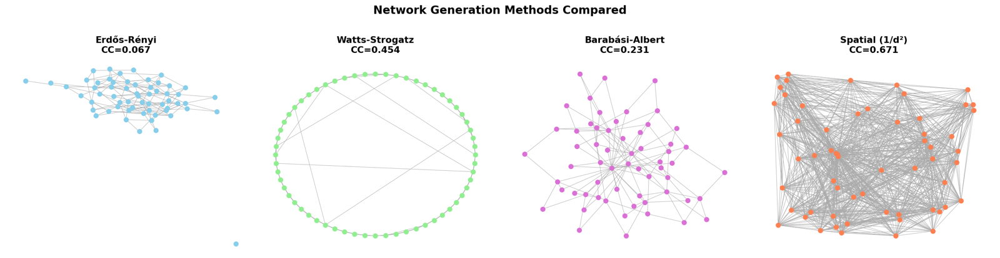
The through-line is one question: what makes a network look like a brain? The course answers it by measuring candidate networks against biological criteria, then showing that pruning a dense weighted graph reproduces those criteria more faithfully than the standard random models.
- Starts from the vocabulary — directed, weighted and simple graphs; degree, paths, cycles and connectivity — each introduced through its neural counterpart.
- Measures what matters — clustering coefficient, average path length and the small-world coefficient: the metrics used to decide whether a generated network is biologically plausible.
- Surveys the classic generators — Erdős-Rényi, Watts-Strogatz, Barabási-Albert and spatial / inverse-square models — and shows where each falls short of real cortical structure.
- Builds networks by pruning — deterministic, probabilistic and distance-weighted pruning, then multiple developmental cycles of weight decay, Pareto-principle reinforcement and elimination.
- Ends with functional analysis — spectral clustering, Louvain community detection and weighted modularity to read out the modular structure that pruning leaves behind.
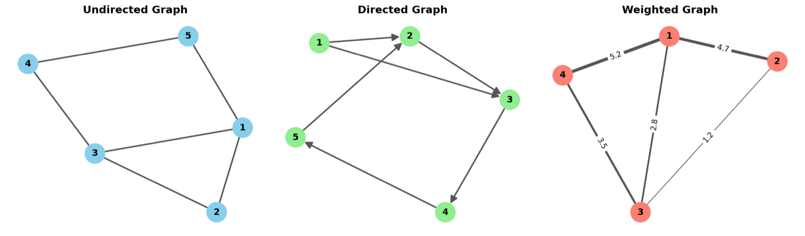
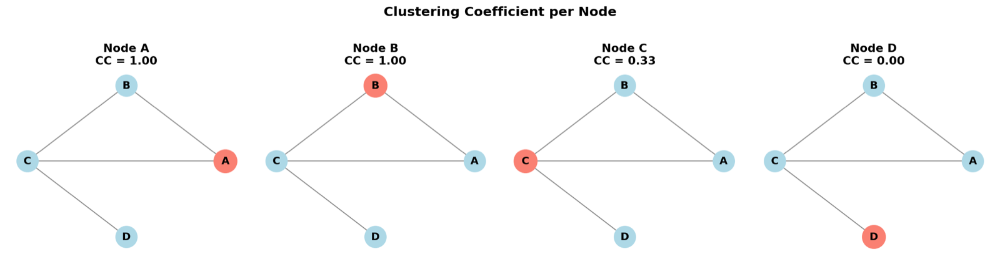
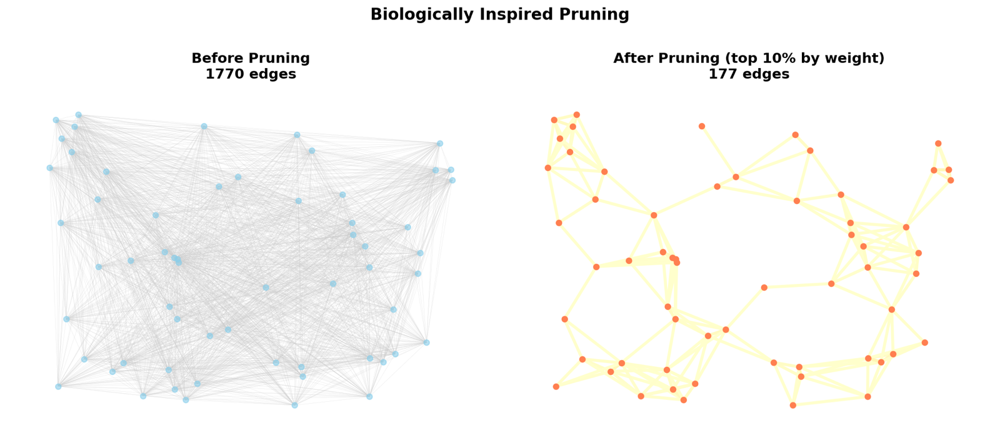
Archive
-
Music Composition, 2018-2022
Archived composition, scores, recordings, and selected credits.